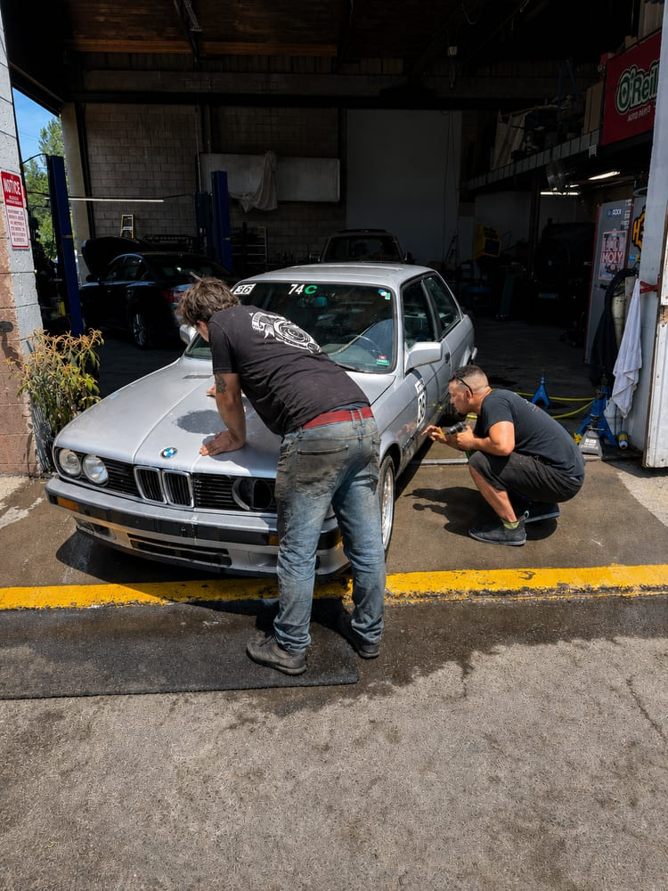

River City Auto Haus is what happens when a working mechanic, his family, and a small town decide the auto repair industry can do better.

Our shop didn't start with a storefront. It started five years ago as a home-based operation, working out of a big shop at owner Zack Watson's own house. The work was good, word got around, and the business outgrew the property, so we moved down the hill into St. Helens and opened a real brick-and-mortar shop at 124 Eilertson St.
In 2026 we rebranded as River City Auto Haus. The new name reflects who we'd become: a river-town shop with a specialty in European vehicles. The "Auto Haus" part is a promise, not a decoration. But the rebrand didn't change how we operate. Same owners, same technicians, same phone number, same handshake.
Owner and lead technician. Zack runs the shop floor and handles everything from diagnostics to full engine builds, and he'd rather lose a sale than sell you a repair you don't need.
Co-owner. Teresa grew up around cars (her dad was big into racing), and today she runs the business side along with our community programs, including a free car care class for local women and kids.
Our unofficial director of marketing. The owners' oldest daughter makes business cards and staples them to invoices. There's almost always a kid at the shop. That's what family-run actually looks like.
We're a mom-and-pop shop on purpose. No service advisors working on commission, no corporate quotas. When you call, you're talking to the people whose name is on the building.
In the auto repair trade, technicians are informally graded. A C-level tech handles the basics like oil changes, tires, and simple services. A B-level tech can execute repairs when someone else tells them what's broken: nut-and-bolt work, no diagnostics. An A-level tech can take a vehicle from "something's wrong" to "fixed" on their own. They diagnose the problem, then do the repair, on any system in the car.
A lot of shops run a big crew of B and C techs banging out volume. We deliberately stay small and staff only a few A-level technicians. It means the person who diagnoses your car is the person who fixes it, and the job gets done right the first time, because nobody's guessing.
Most of our business comes from word of mouth. In a small county, good word travels fast, and bad work catches up with you. That reputation now pulls customers from Portland, Longview, and across Oregon. We recently delivered a finished customer's car all the way out to Idaho. When people drive past dozens of other shops to get here, we take that seriously.
We regularly work with insurance companies, third-party warranty administrators, and incidental claims. And here's something many drivers don't know: as the customer, you have the right to take your vehicle to any shop you choose. You are not required to use the shop your insurer or dealer suggests. If a repair might be claimable, we'll tell you so before you pay out of pocket.
Stop by the shop on Eilertson St, say hi to whichever kid is stapling business cards that day, and get a straight answer about your car.
Call (503) 867-0609